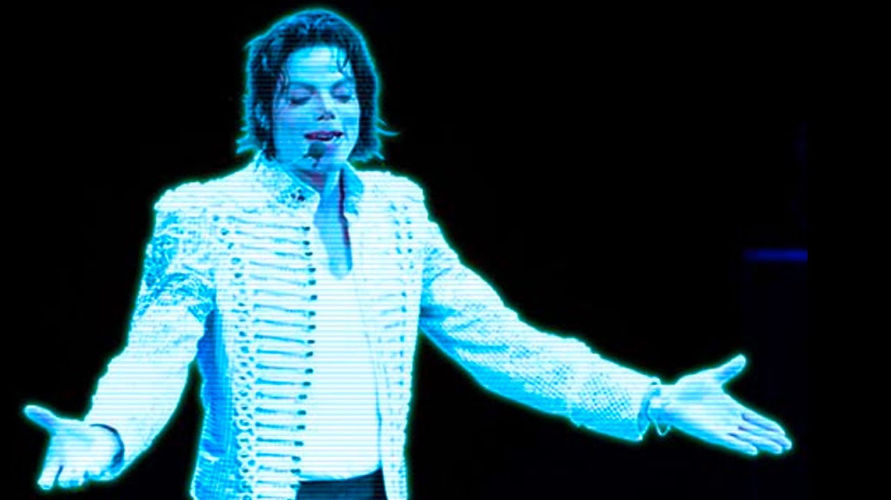
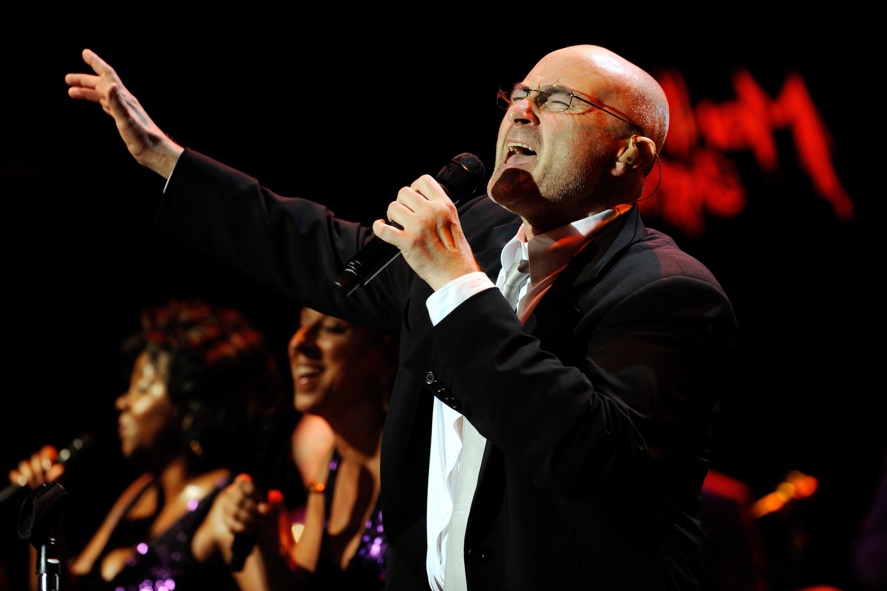

Artister Som Kommer Till Lundakarnevalen 2022!
Michael Jackson Hologram

Michael Joseph Jackson (August 29, 1958 – June 25, 2009) was an American singer, songwriter, and dancer. Dubbed the "King of Pop", he is regarded as one of the most significant cultural figures of the 20th century and one of the greatest entertainers. Jackson's contributions to music, dance, and fashion, along with his publicized personal life, made him a global figure in popular culture for over four decades.
Nevertheless, through our combined efforts with our science team on LundaKarnevalen we have managed to develope a hologram of Michael Jackson which will be part of the show!
Phil Collins

Philip David Charles Collins LVO (born 30 January 1951)[8][9] is an English drummer, singer, songwriter, multi-instrumentalist, record producer, and actor. He was the drummer and later became singer of the rock band Genesis, and is also a solo artist. Between 1982 and 1989, Collins scored three UK and seven US number-one singles in his solo career. When his work with Genesis, his work with other artists, as well as his solo career is totalled, he had more US Top 40 singles than any other artist during the 1980s.[10] His most successful singles from the period include "In the Air Tonight", "Against All Odds (Take a Look at Me Now)", "One More Night", "Sussudio", "Two Hearts" and "Another Day in Paradise".
Simon Da Rapper
Simon Greger Svante Arnshed(Born 30 mars 1921) is a Trelleborgisk rapper, songwriter and producer. He was the main singer in the boyband "Trelleboysen" until the group parted ways 1984. Simon scored several Swedish singles during his career and is still scoring even though his old age. His most successful single "Ta mig hem till Trelleslott" has been on the top 30s singles in Sweden since 1965.
DJ Ogge MCBeatboxer
Brobrobro bruh bruh Bruhbruhbruh bre bre Brebrebre brih brihBrih brih brih (tih-tih)
Brih brih brih bre bre Brebrebre bro bro Bro bro bro bruh bruh